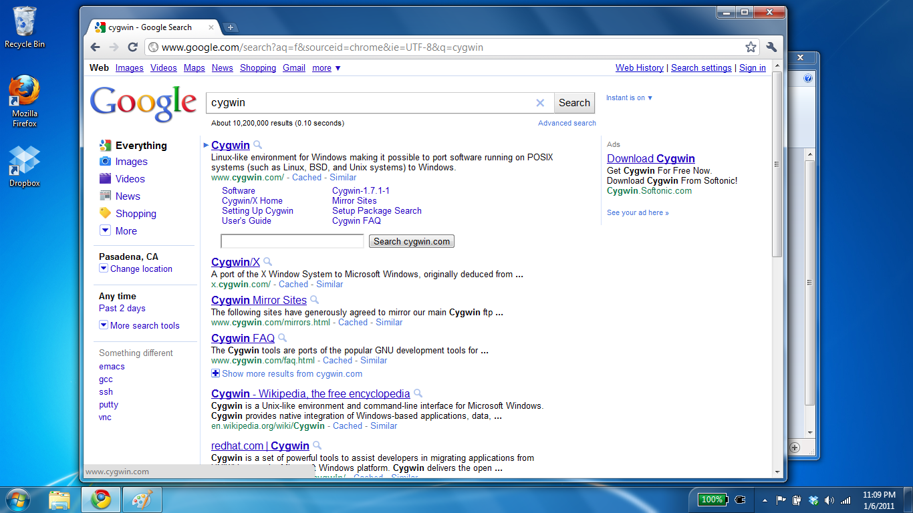
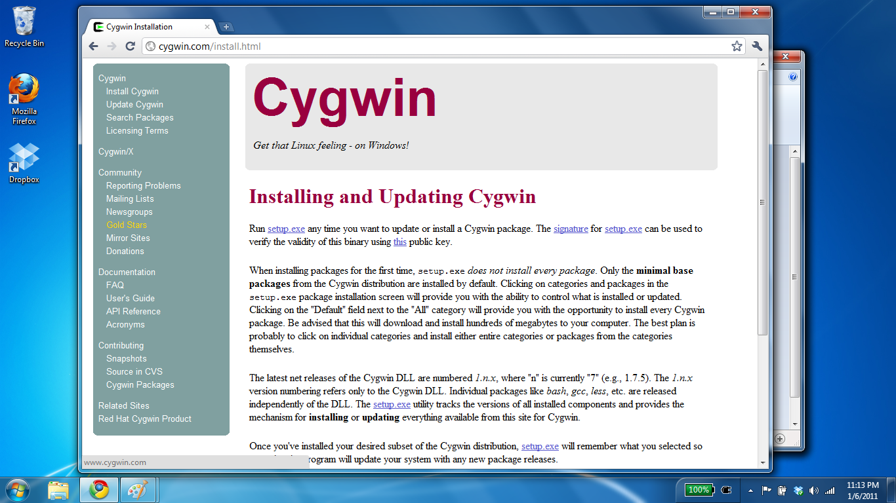
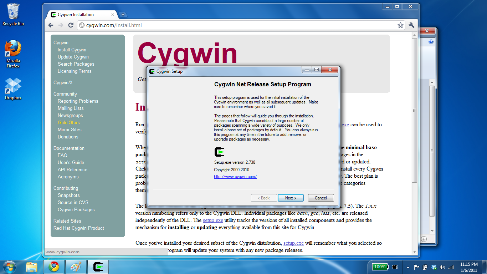
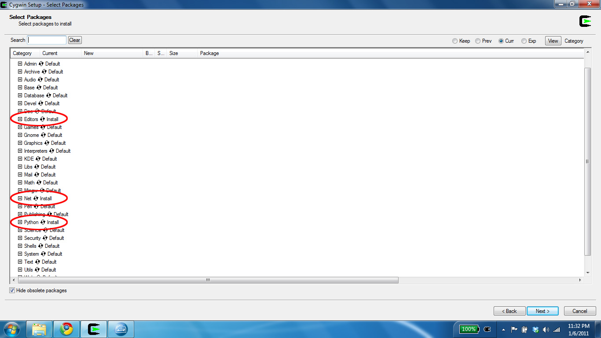
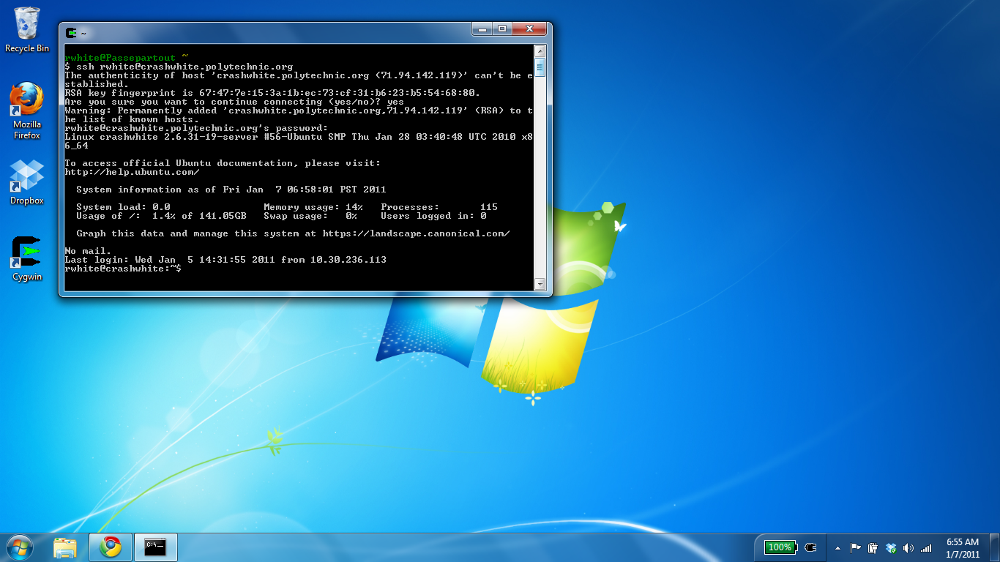

Installing Cygwin
Running a Linux-style terminal that allows you to ssh or sftp to a server, or run Python, is something that a Windows machine can't do without a little help. Download Cygwin to give you those capabilities.
-
Find Cygwin on the Internet, or go directly to cygwin.com.
 -
Select "Install Cygwin" from the left-side menu, and click on the setup.exe link in the text.
 -
Once the setup program is running...
 -
... you'll be asked if you want to add any custom installs. For this course, you should select net and Python to be installed, as shown here. You may also wish to select Editors if you wish to use vim, emacs, nano, or number of other text editors available as part of this install.
 -
Once Cygwin has finished installing—it can take awhile, depending on how many packages you've asked to include—you can launch it from the shortcut placed on the Desktop, or by launching it as you would any application. Issue shell commands as you would on your OS X or Linux Terminal.
